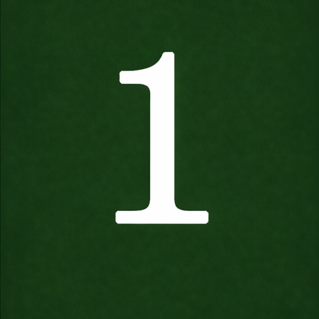
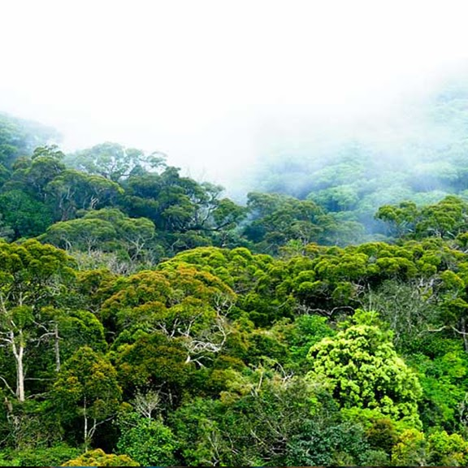
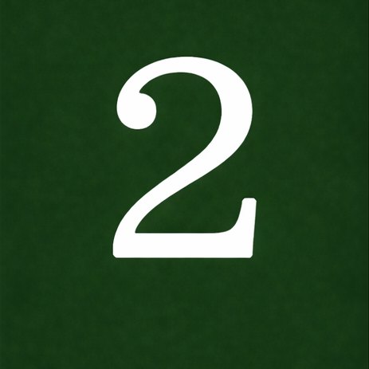
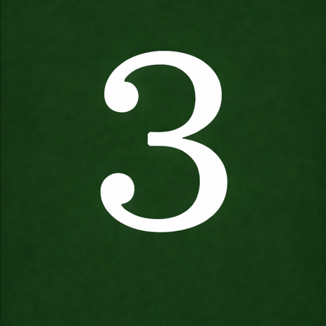

Nature first

Nature first
The ecosystem sets the route
Each journey is built around the habitat and its seasons, not a fixed checklist of sights.
Home/About
The Naturalist takes travellers into Sri Lanka's rainforests, ancient ruins, living villages and wild places, with a guide who has spent a lifetime in them.

Born into a family where archaeology was a way of life, Priyanwada grew up in the company of ancient civilisations. Her father worked alongside some of Sri Lanka's most distinguished archaeologists, among them Siran Deraniyagala, Roland Silva and Senake Bandaranayake. Through his journeys and his quiet reverence for the past, she found early what most people never do: a real sense of belonging to a land and its history.
She grew up among sacred sites, crumbling fortresses and landscapes that held more memory than any textbook. From the start, she learned to see Sri Lanka as a living story still being told, not a tourist destination.
Her curiosity carried her beyond ruins and rock inscriptions, into rainforests, lagoons, national parks and the ancient ecosystems that have lived alongside the island's civilisations for millennia.
Today she brings a rare perspective to every journey, one that bridges ancient heritage and living nature, history and ecology, the human story and the wild one.
Her fieldwork spans the Sinharaja rainforest, the dry plains of Yala, coastal lagoons and the central highlands. As a researcher and conservationist she leads travellers, students and young naturalists in the field.
Connect on LinkedIn“Sri Lanka is not just an island. It is a living museum of nature, of people, of time.”
Priyanwada Rathnayake
Trips are personal but planned well ahead. We handle the logistics so you can give your attention to the place.

Each journey is built around the habitat and its seasons, not a fixed checklist of sights.

We work with local communities, keep our footprint small and aim to leave every place better for the visit.

What you learn comes from years of fieldwork and research, shared on the trail rather than recited from a script.
Tell Priyanwada what you hope to see, how long you have, and who's travelling. She'll shape a route around it.